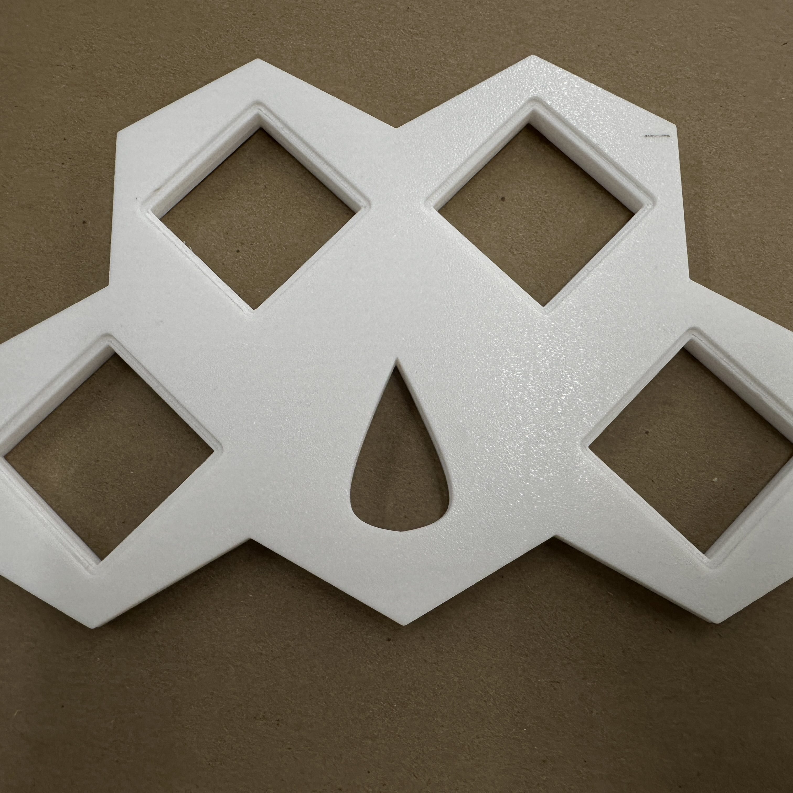
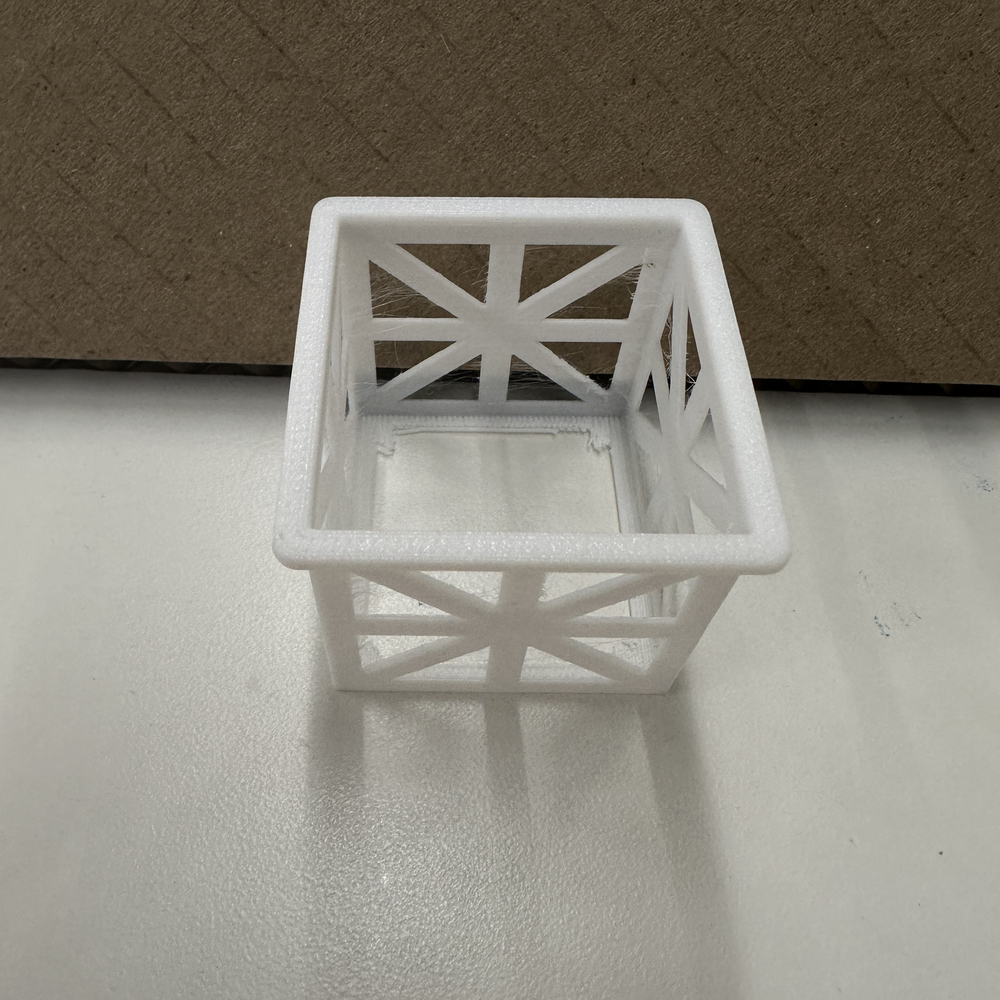
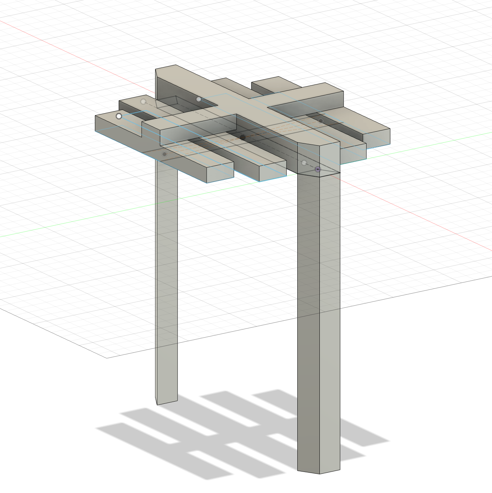
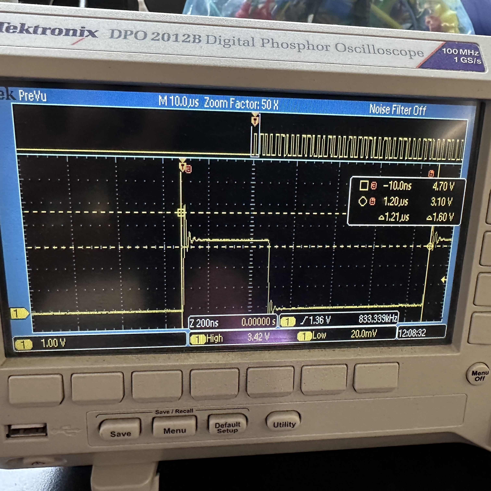
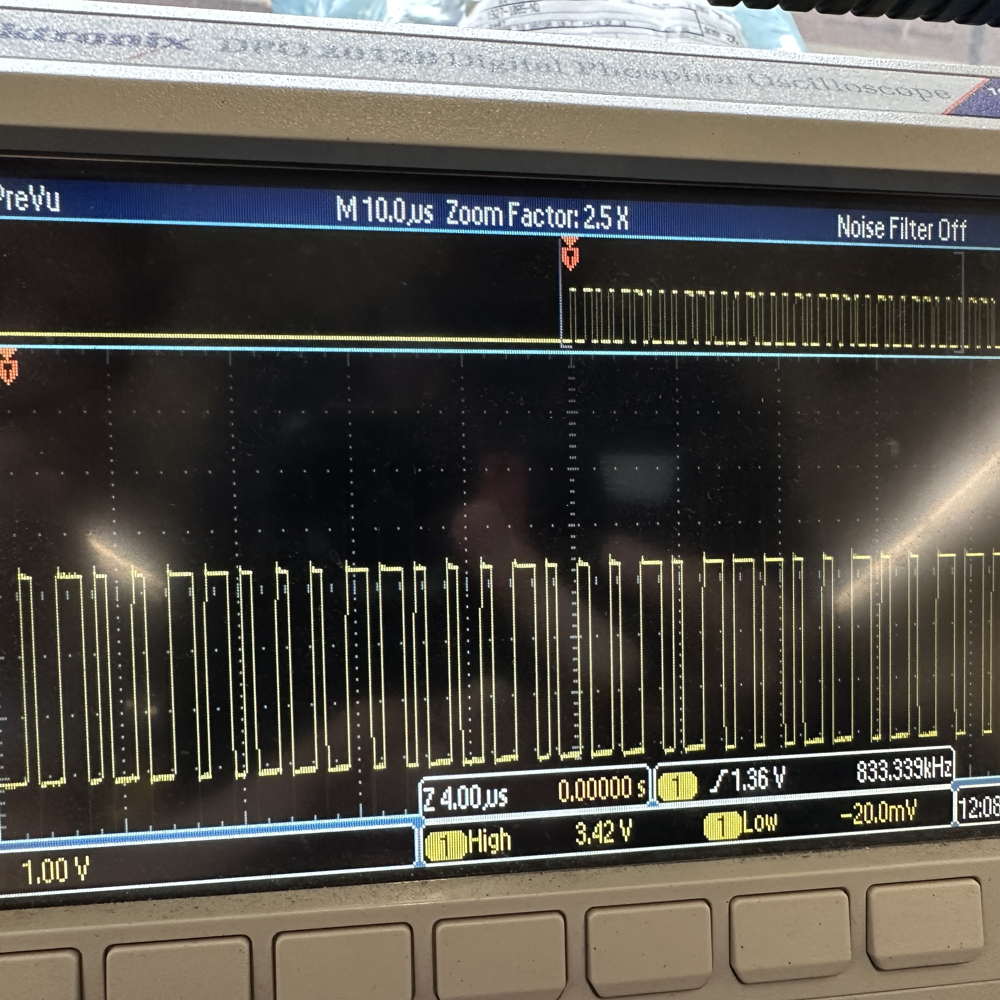

<div class="textcontainer">
<p class="margin"> </p>
<h3>Week 7: Electronic Outputs</h3>
<p class = "margin"></p>
<p class = "margin"></p>
<h4>Assignment: Minimum Viable Product for Final Project</h4>
<p>
For this week, I felt an urgency to begin iterating on some of my body pieces, determining which ones could be easily 3d printed and which ones would need be made
more creatively, and generally making sure that pieces fit together. Thus, I printed the lid of my primary body piece and one of my baskets that will hold
rockwool.
</p>
<p></p>
<p class = "margin"></p>
<p></p>
<p>
<p class = "margin"></p>
Looking forward, I ordered rockwool pods and RGB light strips that match the brightness and strength requirements of a grow light.
Additionally, I modeled a light array that should be able to fit into place around my body once complete. I will print this ASAP and begin to wire together
my lighting array once it is complete.
</p>
<p class = "margin"></p>
<p></p>
<p class = "margin"></p>
<p class = "margin"></p>
Despite the incompleteness of the light array, I worked on creating the code and circuit that I will use once complete. This auto adjusts the lights to
dim as they receive more ambient light and strengthen as they receive less using an RGB strip and phototransistor. The hope is that this compensates for the amount of natural sunlight that
the plants are receiving, providing them more light on a cloudy day and less on a day where lots of light is shining through the window. Here's it in action.
</p>
<p class = "margin"></p>
<source src="Circuit.mp4" type="video/mp4">
<p class = "margin"></p>
<p>And here is the code using class structures.</p>
<p class = "margin"></p>
<a download href='./LightNoDelay.ino'>Download my .ino file</a>
<p class="margin"> </p>
<p></p>
<p>
Finally, I used the oscilloscope to read the RGB strip in my circuit, finding fixed signals of messaging that were set by the manufacturere of
the RGB strip. Each section was 1.21 .us long, however the voltage read varied in length to signify a 1 or a 0 that overall correlated to the color that I had
set via my code (a warmer white).
</p>
<p></p>
</div>